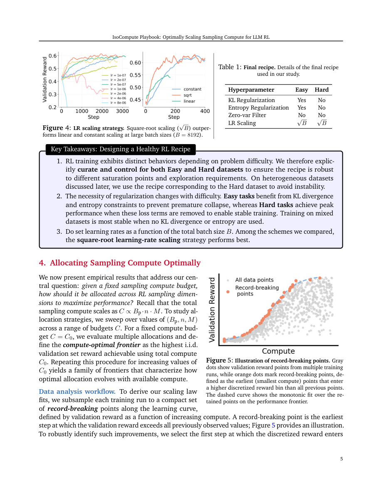

#1
★ 9/10
IsoCompute Playbook: Optimally Scaling Sampling Compute for LLM RL
IsoCompute 手册：优化LLM强化学习的采样计算资源分配

图 Figure · Page 5 of paper
🎯 为LLM强化学习后训练提供最优采样计算分配法则
A prescriptive scaling law framework for optimally allocating sampling compute in LLM reinforcement learning post-training.
❓ Problem · 解决什么问题
我们知道如何为大语言模型的预训练分配计算资源（即"缩放定律"），但对于强化学习后训练阶段，如何最优地分配计算预算却几乎没有系统性的指导。具体来说，在有限的计算预算下，应该为每个问题生成多少个并行答案、每批处理多少个问题、执行多少次更新步骤，这三者之间的最优权衡尚不明确。
Scaling laws are well-established for LLM pre-training, but no analogous prescriptive rules exist for reinforcement learning (RL) post-training. When a fixed compute budget is available, it is unclear how to best divide it among three competing resources: the number of parallel rollouts (sampled solutions) per problem, the number of problems per training batch, and the number of gradient update steps. Poor allocation leads to wasted compute and suboptimal model performance.
⚙️ Method · 方法
研究者将RL后训练的计算分配问题形式化为一个在固定计算预算（"等计算"约束）下对三个资源变量的联合优化问题。他们系统地实验了不同的并行rollout数量、批次问题数量和更新步骤数，观察模型性能随计算预算变化的规律。研究发现并行rollout数量与计算预算之间存在可预测的幂律关系，并分别分析了简单问题（解的锐化效应）和困难问题（覆盖扩展效应）背后的不同机制。最终，这些实验规律被提炼为可跨模型和数据分布验证的通用分配准则。
The authors frame compute allocation as a constrained optimization problem over three variables — parallel rollouts per problem, problems per batch, and update steps — all under a fixed total compute budget (the "isocompute" constraint). They conduct systematic experiments sweeping these variables across multiple compute budgets, base models, and data distributions to empirically identify optimal allocation strategies. They analyze the mechanisms behind their findings separately for easy and hard problems, and derive power-law relationships between optimal rollout counts and compute budget. The resulting rules are validated as broadly transferable prescriptions.
📐 Key Formulas · 关键公式
\[N^*_{\text{rollouts}}(C) \propto C^{\alpha}, \quad \alpha \in (0, 1)\]
💡 最优并行rollout数量与总计算预算C之间呈幂律关系，指数α在0到1之间，表示随预算增加rollout数量应增加但会逐渐饱和。
The compute-optimal number of parallel rollouts scales as a power law of the total compute budget C, with exponent α between 0 and 1, meaning rollouts should increase with budget but with diminishing returns.
\[C = N_{\text{rollouts}} \times N_{\text{problems}} \times N_{\text{steps}} \times C_{\text{unit}}\]
💡 总计算预算C等于并行rollout数、批次问题数、更新步骤数与单次计算单元成本的乘积，三者共同构成等计算约束下的优化变量。
Total compute budget C is the product of parallel rollouts, problems per batch, update steps, and per-unit cost — the three allocation variables that must be jointly optimized under the isocompute constraint.
📊 Results · 结果
核心发现包括：（1）每个问题的最优并行rollout数量随计算预算呈幂律增长，但最终会饱和，这一规律跨模型和数据集均一致；（2）对于简单问题，增加rollout数量通过"解的锐化"提升性能（强化已知的正确解）；对于困难问题，则通过"覆盖扩展"提升性能（发现更多样的正确解路径）；（3）增加并行rollout数量可有效缓解不同问题之间的梯度干扰；（4）每批问题数量主要影响训练稳定性，可在较大范围内灵活选择，而不显著影响最终性能。这些规律经过跨不同基础模型和数据分布的验证，具有较强的普适性。
Key quantitative and qualitative findings include: (1) The compute-optimal number of parallel rollouts per problem grows predictably with compute budget following a power-law relationship before saturating — a trend consistent across all tested base models and data distributions. (2) On easy problems, more rollouts improve performance via "solution sharpening" (reinforcing known correct solutions); on hard problems, via "coverage expansion" (discovering more diverse correct solution paths). (3) Increasing parallel rollouts measurably reduces cross-problem gradient interference during training. (4) The number of problems per batch primarily governs training stability rather than final performance, and can be selected from a wide range without significant accuracy loss. The prescriptive allocation rules were validated across multiple base models and dataset distributions, confirming their generalizability.
🌟 Why It Matters · 为什么重要
强化学习后训练（如RLHF、GRPO等）是让大语言模型对齐人类意图和提升推理能力的关键步骤，但其计算成本极高。本文首次为这一阶段提供了类似预训练缩放定律的系统性分配准则，能够帮助研究者和工程师在相同计算预算下获得更好的模型性能，大幅降低试错成本。
RL post-training is a critical and expensive step for aligning and improving LLMs, yet it has lacked the principled compute scaling guidance that pre-training enjoys. This paper fills that gap by providing actionable, validated allocation rules that can help practitioners achieve better model performance for the same compute budget, directly impacting the efficiency of the entire LLM development pipeline.